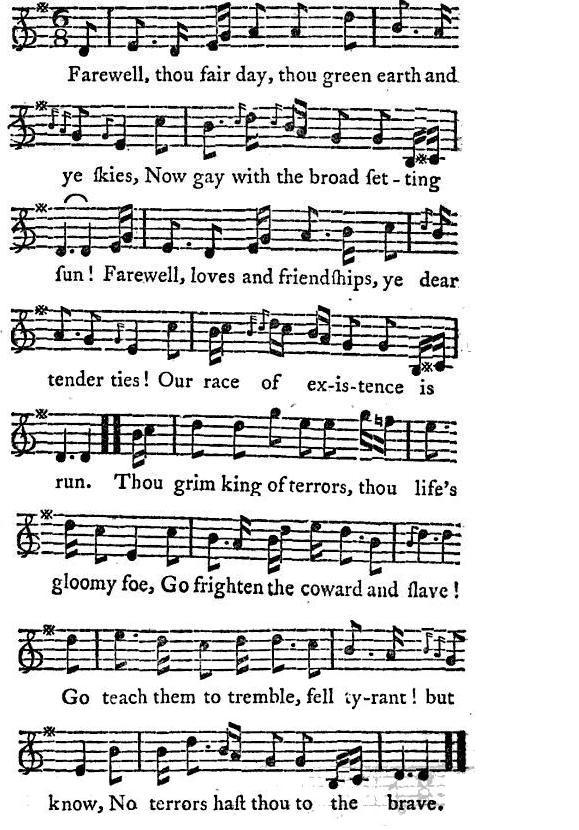

Oran an Aoig - The Song of Death
Chant de la Mort
by Robert Burns
From "Scots Musical Museum", volume 4, n°385, page 399Tune - Mélodie
"Oran an aoig"
from Joseph Ritson's "Scotish Songs", Volume II, N° 34, page 259, 1794
Sequenced by Christian Souchon

|
To the tune:
Joseph Ritson (1752 - 1803) notes "By Robert Burns, A Gaelic air". Is it correct to consider it a Jacobite song? In Ritson's collection of "Scotish Songs", this song (N°34**) is presented among the "Additional songs" to Class III ("Historical and Martial Songs"). The previous N°, "Ye Jacobites by name" (N°34*) is a Jacobite song, but the next one, "The death song of the Cherokee Indians" refers to the American Independence war. The melody is included in Patrick McDonald's "Collection of North Highlands and Western Isles tunes", first published 1784, under N°162. |
A propos de la mélodie:
Joseph Ritson indique: "De Robert Burns, air gaélique". Doit-on considérer qu'il s'agit ici d'un chant Jacobite? Dans le recueil de Ritson, ce chant (N°34**) est rangé parmi les "additions à la classe III" (Chants historiques et martiaux). Le chant précédent, "Ye Jacobites by name" (N°34*) est Jacobite, mais le suivant, "La mort des Indiens Cherokees", a trait à la guerre d'indépendance américaine. La mélodie se trouve au N°162 dans la "Collection de chants des Highlands du nord et des Hébrides" de Patrick McDonald, publiée pour la première fois en 1784. |

|
ORAN AN AOIG
1. Farewell, thou fair day, thou green earth and ye skies, Now gay with the broad setting sun! Farewell, loves and friendship, ye dear tender ties! Our race of existence is run. Thou grim king of terrors, thou life's gloomy foe, Go frighten the coward and slave! Go teach them to tremble, fell tyrant! but know, No terrors hast thou to the brave. 2. Thou strik'st the dull peasant, he sinks in the dark, Nor saves e'en the wreck of a name: Thou strik'st the young hero, a glorious mark! He falls in the blaze of his fame. In the field of proud honor, our swords in our hands, Our king and our country to save. While victory shines on life's last ebbing sands, O, who would not die with the brave! Source: "Scotish Songs, volume II" collected by Joseph Ritson (1752 - 1803), published in London 1794. |
ORAN AN AOIG
1. Adieu, beau jour que le soleil couchant égaye! Adieu verte terre et firmament! Adieu, nos amis, notre carrière s'achève! Adieu, nos amours et tendres liens! Sombre roi des terreurs, prends-t-en donc à l'esclave Ou bien au lâche qu'on voit tremblant! Apprends-leur à frémir, mais ne crois pas qu'un brave, Aura peur de toi, cruel tyran! 2. Tu frappes et le nom du rustre des grimoires S'efface à jamais, tombe en oubli. Mais frappe un jeune héros: auréolé de gloire. Dès lors qu'il tombe, tu l'anoblis. Au champ d'honneur, pour notre roi, notre patrie, Qui ne voudrait, le glaive à la main, Aux prix de la victoire, sacrifier sa vie? Oui, vaincre alors que sa vie prend fin? (Trad. Christian Souchon (c) 2010) |